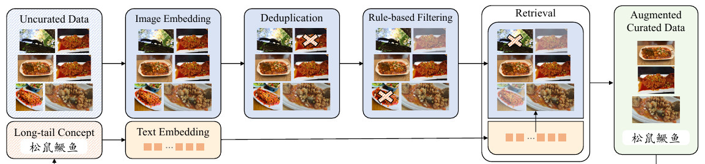
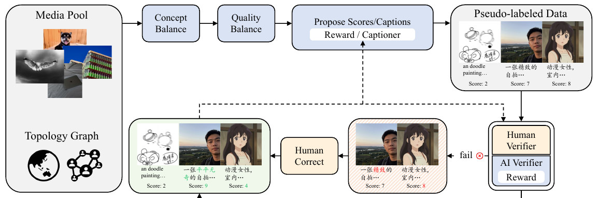
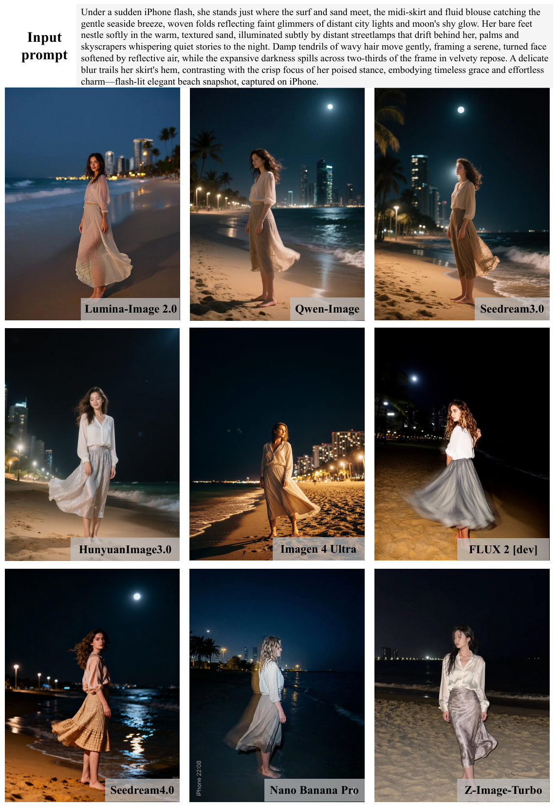

速览
五条要点
小模型 + 账本公开
6B 单流 DiT，低分辨率预训练 147.5K、omni 预训练 142.5K、后训练 24K，合计 314K H800 GPU 时表 1。同行开源对照为 Qwen-Image 20B、FLUX.2 32B、HunyuanImage-3.0 80B§1。
一个底座，生成 + 编辑
omni 预训练把任意分辨率、T2I、I2I（含视频帧等弱对齐图像对）放进同一阶段，作者称对 T2I 没有可察觉退化§4.3（无数字）。Z-Image-Edit 从这里接续训练。
caption 是一等公民
Z-Captioner：先 OCR 再写 caption、文字保留原语言；五种粒度（长/中/短/标签/模拟用户 prompt）；编辑用三步差异 caption§3。作者称显式 OCR 与文字渲染准确度「密不可分」（无消融表）。
8 步蒸馏不掉色
Decoupled DMD 把 DMD 拆成 CFG 增强（主引擎）与分布匹配（正则器），再用 DM 项给 RL 当正则（DMDR），得到 8 NFE 的 Turbo§4.5；效果证据是图 13 定性对比。
文字渲染领先，编辑第一梯队
CVTG-2K 平均 Word Acc 0.8671 第 1表 5；OneIG-EN 总分 0.546 第 1表 7；GEdit-EN G_O 7.57、ImgEdit 4.30，落后 UniWorld-V2表 14–15。
架构：S3-DiT（单流多模态 DiT）
论文架构图（图 10）未随本页裁图提供，下面用示意图按 §4.1 文字复原，只画原文写明的部分。
相对同类的改动
单流而非双流 §4.1
文本、语义、VAE token 在序列维拼接后共用一套权重，作者对比的是 SD3 / Qwen-Image 式双流 MM-DiT，理由是参数效率更高（未给同规模对照实验）。
轻量模态处理器 §4.1
每个模态先过 2 个 Transformer 块做初步对齐，再进主干。
稳定性三件套 §4.1
QK-Norm 控注意力激活，Sandwich-Norm 约束块输入输出幅度，全部归一化统一用 RMSNorm。
编辑的位置编码 §4.1
3D Unified RoPE：图像 token 沿空间展开、文本 token 沿 temporal 递增；参考图与目标图空间坐标对齐、temporal 偏移 1，靠不同 t 值区分干净/加噪。
训练系统优化 §4.2
- 冻结的 VAE 与文本编码器用普通 DP；DiT 用 FSDP2 分片优化器状态与梯度。
- 所有 DiT 层开 gradient checkpointing；DiT 块用
torch.compile。 - 按元数据里的宽高预估序列长度，相近长度组 batch，减少 padding；长序列小 batch、短序列大 batch（动态 batch size）。
- Turbo 的亚秒推理需要 FlashAttention-3 与
torch.compile脚注 1。
数据：四模块基础设施 + 编辑对 + Z-Captioner
论文把重点从「数据量」换成「每单位算力的信息增益」。所有绝对规模和配比基本都没给，下面写清楚哪些披露了、哪些没有。
4.1 数据从哪来、管线长什么样
来源：内部「大规模版权图像集合」构成的未清洗数据池§2.1；编辑对另有视频帧和渲染系统§2.5。作者在引言中明确称文生图训练「纯真实数据、不蒸馏其他模型的结果」§1。
4.2 清洗与过滤（Data Profiling Engine）
元数据层 §2.1
- 宽高、文件大小 → 分辨率与长宽比过滤
- 由字节流算 pHash → 去除相同/近似重复
技术质量 §2.1
- 压缩伪影：理想未压缩大小 ÷ 实际文件大小，比值低 = 过度压缩
- 退化：内部画质模型打分偏色、模糊、可见水印、噪声
- 信息熵：边缘像素方差（纯色背景/边框）+ 临时 JPEG 重编码后的 BPP
语义与美学 §2.1
- 美学模型，用专业标注员标签训练
- 参照 Imagen 3 训练 AIGC 分类器，过滤 AI 生成图
- 专门训练的 VLM 打语义标签（物体类别、人数等人物属性、侧重中国文化概念），同时给 NSFW 分
图文一致性 §2.1
- CN-CLIP 计算图像与 alt caption 的相关分，低分丢弃
- 入选预训练的图统一重写多级 caption；水印与可见文字交给 VLM 写进 caption，而不是单独跑 OCR / 水印检测模块
所有阈值（压缩比、美学分、CLIP 分、BPP 等）原文未披露；各过滤器的剔除比例也未给。
4.3 去重、知识图谱与长尾补数
语义去重规模 §2.2
k-NN 构图 + 社区发现，k 足够大时近似原算法。全 GPU 管线在 8 张 H800 上约 8 小时处理 10 亿条（含建索引与 100-NN 查询）§2.2。社区的模块度层级还用于细粒度配平。
失败驱动的剪枝 §2.2
拿问题生成图或 prompt 去检索，定位并剪掉导致错误行为的数据簇；同时检索分布空洞做定向补数。
知识图谱三步 §2.3
- 全部 Wikipedia 实体 + 超链接建图；PageRank 过低的节点剪掉；VLM 剔除无法可视化的抽象概念
- 从内部 caption 抽标签与文本 embedding，层次聚类，父节点由 VLM 概括命名
- 人工上调用户 prompt 中的高频概念，主动加入新出现的热门概念
语义级平衡采样 §2.3 / §4.4
caption 标签映射到图谱节点，结合标签的 BM25 分与父子关系算每条样本的采样权重；SFT 阶段在线计算稀有度分，上调稀有概念、下调高频概念。


4.4 编辑对怎么造（§2.5，本系列读者重点）
专家模型 + 混合编辑 §2.5
先整理编辑任务分类体系，每类用任务专属的专家模型合成数据；把多个编辑动作合进同一对样本（mixed-editing），一对数据练多种能力。
图式组合（Graphical Representation） §2.5 / 图 7a
同一输入图生成 N 个不同任务的编辑版本，再任意两两组合，「零成本」扩量（参考 [41]）；原文给出的对数公式在文本抽取中受损，按排版应为 2·C(N+1, 2)，即 N+1 张图的有序对数推算。附带两个好处：两个编辑版之间天然是混合编辑；会产生反向对，让真实、无失真的原图当输出。
视频帧配对 §2.5 / 图 7b
来自媒体池中大规模视频帧的「天然成组」图像（同主体/场景/风格），用 CN-CLIP 余弦相似度筛出组内高语义相关的对。优点：任务多样、多种变化天然耦合（如姿态 + 背景同时变）、可扩展。相似度阈值原文未披露。
渲染文字编辑 §2.5 / 图 7c
可控文字渲染系统（沿用 Qwen-Image [76] 的思路），控制内容、字体、颜色、字号、位置；渲染操作本身就是 GT 指令。但 SFT 阶段这类合成数据因偏离真实用户分布被大幅下采样§4.7。
4.5 Caption：Z-Captioner（§3）
一个模型同时出文生图 caption 和编辑指令，作者引 [49] 认为不同 caption 任务互相促进。world knowledge 来自图像的 meta 信息，以此为条件做 caption，减少对名人、地标、事件的命名幻觉§3.2。
OCR 先行（类 CoT） §3.1
先显式识别图中全部文字，再基于 OCR 结果写 caption，长/密文字场景漏字更少；OCR 结果保持原语言、不翻译，避免模型把文字渲染成译文。作者称「据实验」显式 OCR 与文字渲染准确度强相关，但未给数字。
训练时怎么用 §4.3
omni 预训练用 Z-Captioner 生成的中英双语多级 caption；以「小概率」混入原始文本元数据补世界知识；I2I 任务以「一定概率」在目标图 caption（参考引导生成）与差异 caption（多任务编辑）间采样。具体概率原文未披露。
差异 caption：三步 CoT §3.3
captioner 自身的训练数据规模、底座 VLM、评测指标原文未披露；只知道它在图 6 的主动学习回路里迭代重训。
4.6 已披露的规模与配比
原文没有给出任何来源占比，所以这里不画百分比柱，只列表。
| 项目 | 原文给出的内容 | 出处 |
|---|---|---|
| 预训练图像总量 | 原文未披露；仅称「大规模内部版权集合」 | §2.1 |
| 向量引擎规模 | 「数十亿 embedding」；去重吞吐 8×H800 约 8 小时 / 10 亿条，100-NN | §2、§2.2 |
| 各过滤器剔除率 / 阈值 | 原文未披露 | — |
| caption 类型 | 5 种：长、中、短、标签、模拟用户 prompt；中英双语 | §3.2、§4.3 |
| 原始元数据混入概率 | 「小概率」，具体值原文未披露 | §4.3 |
| 编辑对总量 / 各来源占比 | 原文未披露；仅说编辑对远少于、且远不如 T2I 数据多样 | §4.7 |
| 编辑持续预训练的 T2I : I2I | 建议 4 : 1（原文写作 e.g.，是建议值） | §4.7 |
| DPO 偏好对数量 | 原文未披露 | §4.6.2 |
| 人评样本 | 与 Flux 2 dev 对比：222 个样本，每个 3 名标注员 | §5.1.2 |
训练配方
目标函数：flow matching，xt = t·x1 + (1−t)·x0，回归速度 x1−x0；logit-normal 采样 t（同 SD3），多分辨率下用 Flux 式动态 time shift§4.3。学习率、batch、步数等超参原文均未给。
Z-Image 主线 图 11 · §4.3–4.6
低分辨率预训练
单阶段，固定 256²，仅 T2I；做跨模态对齐与知识注入。作者称中文文字渲染等基础视觉知识主要在此阶段习得。
Omni 预训练
多阶段。任意分辨率（映射到预设区间）+ T2I/I2I 联合 + 多级双语 caption；结束时可生成 1k–1.5k 任意分辨率，支持图文双条件。
PE-aware SFT
精选图 + 超详细 caption 收窄分布；所有 prompt 先过冻结的 Prompt Enhancer；BM25 稀有度重采样；多个 SFT 变体线性插值做模型融合。
少步蒸馏
Decoupled DMD 修复细节丢失和偏色，DMDR 在蒸馏中引入 RL、以 DM 项防 reward hacking；约 100 NFEs → 8 NFEs。
RLHF
先离线 DPO（只做文字渲染、计数等可客观校验维度），再在线 GRPO（多维 reward 聚合成复合 advantage）。
Z-Image-Edit 分支 §4.7
编辑持续预训练
全部编辑对 + T2I SFT 数据；512² 训「几千步」快速适配，再升 1024²。
配比
建议 T2I : I2I = 4 : 1，防止因编辑数据少且单一导致退化。
编辑 SFT
人工构建的任务均衡高质量子集；渲染类合成数据大幅下采样。
条宽按表 1 的 GPU 时换算，占比为推算。低分辨率阶段占预训练（290K）的约 50.9%推算，与正文「超过一半预训练算力」一致。后训练 24K 是否包含 Z-Image-Edit 分支原文未披露。
各阶段要点
SFT：收窄分布但不忘长尾 §4.4
- 目标不是修局部伪影，而是把分布从「多样性最大」推到「质量最大」的工作点。
- 维护概念目标先验，BM25 在线算稀有度，组 mini-batch 时上调稀有实体/艺术风格、下调高频概念，保持概念边缘分布均匀。
- 多个偏向不同能力（指令遵循、美学渲染等）的 SFT 变体从同一底座微调，按 θfinal = Σ αiθi 线性合并；α 取值原文未披露。
蒸馏：DMD 的两种机制 §4.5
- CFG-Augmentation（CA）：蒸馏的主引擎，构建少步生成能力，作者称以往文献忽视了它。
- Distribution Matching（DM）：主要起正则作用，稳定训练、去伪影。
- Decoupled DMD 给 CA 与 DM 分别配 renoising schedule；DMDR 把 DM 当 RL 的内在正则。技术细节在独立论文 [45]、[31]。
- 作者称 8 步结果与 100 步 teacher「难以区分」且常常更好；证据只有图 13 的定性对比。
Reward 模型与 RLHF §4.6
- 三维：指令遵循、AI 生成感知（AI-Content Detection perception）、美学。
- 指令遵循标注：prompt 拆为 5 类要素（主体实体 / 属性 / 动作交互 / 空间构图 / 风格渲染），标注员只点未满足的要素，满足比例即 reward 目标。
- DPO：VLM 批量生成 chosen/rejected 对（如文字写对 vs 有错字），人工快速校验；课程从简单（单词、少量物体）到复杂，偏好对先取中等区分度，再逐步加入差异更大或更细微的对。
- GRPO：多维 reward（真实感、美学、指令遵循等）聚合成复合 advantage，作者称明显优于单一 reward（无数字）。
Prompt Enhancer（PE） §4.8
系统提示词 + 预训练 VLM，VLM 全程冻结；SFT 阶段所有输入 prompt（编辑时连同输入图）都先过 PE，让 DiT 对齐 PE 的输出分布。结构化推理链（主体分析 → 解题/知识注入 → 美学增强 → 完整描述）§5.3.6是关键，如能把经纬度推成西湖场景。PE 用的是哪个 VLM原文未披露。
评测
两类人评（公开 Elo 竞技场 + 对 Flux 2 dev 的 GSB）、八个 T2I 基准、两个编辑基准。基线分数是否复用各自论文的数字原文未说明。§5.3 定性部分的「Z-Image」均为 Turbo 版脚注 4。
人评
| Z-Image vs Flux 2 dev（32B） | G | S | B | G+S |
|---|---|---|---|---|
| 222 样本 × 3 标注员表 4 | 46.4% | 41.0% | 12.6% | 87.4% |
G = Good（Z-Image 更好），S = Same，B = Bad。作为对照，G − B = +33.8 pt推算。原文只写「Z-Image」，未说明是基座还是 Turbo；prompt 集为内部「用户风格」prompt，未公开。
所有柱从 0 起；GEdit 为 0–10 分，ImgEdit 为 1–5 分（轴画到 5）。
精选：文生图
| 基准（指标） | Z-Image | Z-Image-Turbo | Qwen-Image | GPT Image 1 [High] | Seedream 3.0 | Z-Image 名次 |
|---|---|---|---|---|---|---|
| 文字渲染 | ||||||
| CVTG-2K 平均 Word Acc表 5 | 0.8671 | 0.8585 | 0.8288 | 0.8569 | 0.5924 | 1 |
| CVTG-2K NED表 5 | 0.9367 | 0.9281 | 0.9116 | 0.9478 | 0.8537 | 第 2a |
| CVTG-2K CLIPScore表 5 | 0.7969 | 0.8048 | 0.8017 | 0.7982 | 0.7821 | Turbo 第 1 |
| LongText-Bench-EN表 6 | 0.935 | 0.917 | 0.943 | 0.956 | 0.896 | 3 |
| LongText-Bench-ZH表 6 | 0.936 | 0.926 | 0.946 | 0.619 | 0.878 | 2 |
| 综合对齐 | ||||||
| OneIG-EN Overall表 7 | 0.546 | 0.528 | 0.539 | 0.533 | 0.530 | 1 |
| OneIG-EN Text表 7 | 0.987 | 0.994 | 0.891 | 0.857 | 0.865 | — |
| OneIG-ZH Overall表 8 | 0.535 | 0.507 | 0.548 | 0.474 | 0.528 | 2 |
| OneIG-ZH Text表 8 | 0.988 | 0.982 | 0.963 | 0.650 | 0.928 | — |
| GenEval Overall表 9 | 0.84 | 0.82 | 0.87 | 0.84 | 0.84 | 并列 2 |
| DPG-Bench Overall表 10 | 88.14 | 84.86 | 88.32 | 85.15 | 88.27 | 3 |
| TIIF testmini Overall（short / long）表 11 | 80.20 / 83.04 | 77.73 / 80.05 | 86.14 / 86.83 | 89.15 / 88.29 | 86.02 / 84.31 | 4 |
| VLM 评判（Qwen2.5-VL-72B） | ||||||
| PRISM-Bench Overall表 12 | 75.6 | 77.4 | 74.1 | 80.7 | 76.2 | Turbo 3 / 基座 5 |
| PRISM-Bench-ZH Overall表 13 | 75.3 | 75.1 | 70.3 | 77.7 | 74.7 | 2 |
a 正文称在 CVTG-2K「所有指标上都更优」，但表 5 中 NED 最高的是 GPT Image 1 [High]（0.9478），4 文本区域 Word Acc 也是 GPT Image 1 更高（0.8731 vs 0.8652）。PRISM-Bench 未列 Gemini 2.5-Flash-Image（EN 80.4，第 2）以节省宽度。
精选：编辑（Z-Image-Edit）
| 模型 | ImgEdit Overall | Add | Extract | Remove | Hybrid | GEdit-EN G_SC | G_PQ | G_O | GEdit-CN G_O |
|---|---|---|---|---|---|---|---|---|---|
| UniWorld-V2 | 4.49 | 4.29 | 4.32 | 4.72 | 3.83 | 8.39 | 8.02 | 7.83 | — |
| Qwen-Image-Edit [2509] | 4.35 | 4.32 | 4.04 | 4.52 | 3.39 | 8.15 | 7.86 | 7.54 | 7.54 |
| Z-Image-Edit | 4.30 | 4.40 | 4.30 | 4.13 | 3.63 | 8.11 | 7.72 | 7.57 | 7.54 |
| Qwen-Image-Edit | 4.27 | 4.38 | 3.43 | 4.14 | 3.82 | 8.00 | 7.86 | 7.56 | 7.52 |
| GPT-Image-1 [High] | 4.20 | 4.61 | 2.90 | 3.66 | 3.96 | 7.85 | 7.62 | 7.53 | 7.30 |
| FLUX.1 Kontext [Pro] | 4.00 | 4.25 | 2.35 | 3.57 | 3.68 | 7.02 | 7.60 | 6.56 | 1.23 |
来源：表 14（ImgEdit，9 类任务，节选 4 类）、表 15（GEdit-Bench）。「—」= 原表未报告。表 15 的名次列与表头 G_O↑ 不一致：Z-Image-Edit 的 EN G_O（7.57）高于排第 2 的 Qwen-Image-Edit [2509]（7.54），名次实际与 EN G_SC 的降序一致推算。正文称在「add 与 extract」上突出，但两项都不是最高（GPT-Image-1 Add 4.61、UniWorld-V2 Extract 4.32）。
人评竞技场细节 §5.1.1 · 表 3
- Artificial Analysis Image Arena：Z-Image-Turbo Elo 1,161，总榜第 8、开源第 1；作者称前十中参数最少（6B）、推理成本最低（$5.0 / 1,000 张）§5.1.1 · 图 16–17。榜单截图日期原文未给，排行榜会动态变化。
- Alibaba AI Arena（表 3）前 9：
| 名次 · 模型 | 类型 | 95% CI | Elo | 胜率 |
|---|---|---|---|---|
| 1 · Imagen 4 Ultra Preview 0606 | 闭源 | −16/+16 | 1048 | 48% |
| 2 · gemini-2.5-flash-image-preview | 闭源 | −16/+14 | 1046 | 47% |
| 3 · Seedream 4.0 | 闭源 | −17/+16 | 1039 | 46% |
| 4 · Z-Image-Turbo | 开源 6B | −15/+17 | 1025 | 45% |
| 5 · Seedream 3.0 | 闭源 | −15/+19 | 1012 | 41% |
| 6 · Qwen-Image | 开源 20B | −16/+16 | 1008 | 41% |
| 7 · GPT Image 1 | 闭源 | −14/+17 | 986 | 38% |
| 8 · FLUX.1 Kontext Pro | 闭源 | −15/+14 | 950 | 32% |
| 9 · Ideogram 3.0 | 闭源 | −15/+16 | 936 | 29% |
第 3 名 Seedream 4.0（1039, −17）与 Z-Image-Turbo（1025, +17）的置信区间重叠推算，名次差距不显著。
完整子项：GenEval / DPG / OneIG 分维度 表 7–10 节选
| 模型 | GenEval Counting | Position | Attr. Binding | DPG Attribute | DPG Relation | OneIG-EN Reasoning | Style | Diversity |
|---|---|---|---|---|---|---|---|---|
| Z-Image | 0.78 | 0.62 | 0.77 | 93.16 | 92.22 | 0.280 | 0.387 | 0.194 |
| Z-Image-Turbo | 0.77 | 0.65 | 0.68 | 90.14 | 92.16 | 0.298 | 0.368 | 0.139 |
| Qwen-Image | 0.89 | 0.76 | 0.77 | 92.02 | 94.31 | 0.306 | 0.418 | 0.197 |
| Seedream 3.0 | 0.91 | 0.47 | 0.80 | 91.36 | 92.78 | 0.275 | 0.413 | 0.277 |
| GPT Image 1 [High] | 0.85 | 0.75 | 0.61 | 89.84 | 92.63 | 0.345 | 0.462 | 0.151 |
位置/计数是 Z-Image 的相对短板；Turbo 在 OneIG 的 Diversity 从 0.194 降到 0.139（EN）、从 0.243 降到 0.134（ZH）表 7–8，与蒸馏 + RL 收窄分布一致（这是本页解读，论文未讨论）。注：「best」只在本表 5 行内比较；GenEval Position 最高其实是 Qwen-Image 0.76。

新在哪
单流 MM-DiT、flow matching、QK-Norm、FSDP2 都是已有做法，不算在内。
omni 预训练：生成与编辑共用预训练预算
任意分辨率、T2I、I2I（视频帧等弱对齐自然图像对）在同一预训练阶段完成，I2I 条件在目标 caption 与差异 caption 间采样；Edit 模型只需两段接续训练。
可核对：§4.3、图 11。「对 T2I 无可察觉退化」没有给数字。
把 DMD 拆成「引擎 + 正则」再接 RL
Decoupled DMD 认为 CFG 增强才是少步能力的主来源，分布匹配只是正则；DMDR 顺势用 DM 项约束 RL 防 reward hacking。
可核对：§4.5、图 13；方法细节在团队另两篇论文 [45][31]。
PE-aware SFT：冻结 VLM、只让 DiT 去适配
不训练 LLM，而是在 SFT 时把所有 prompt（编辑时连同输入图）都过一遍带推理链的 PE，让 6B DiT 学会吃 PE 的输出分布。
可核对：§4.8、图 15。没有「SFT 时不过 PE」的对照数字。
Z-Captioner：OCR 先行 + 元信息条件 + 三步差异 caption
同一个模型同时产出五级 T2I caption 与编辑指令；先抽 OCR、保留原语言，再写 caption；以图像 meta 信息作条件注入世界知识。
可核对：§3、图 8–9。
数据基础设施的工程化闭环
k-NN 图 + 社区发现的语义去重（8×H800 约 8 小时 / 10 亿条）、Wikipedia 知识图谱 + BM25 的语义级采样、生成模型自诊断长尾 + 检索补数、人 + AI 双校验迭代重训 captioner 与 reward。
可核对：§2.2–2.4、图 5–6。均无与「不用该模块」对比的消融。
对图像编辑数据 / 评测 / caption 的启示
每条先写论文怎么做（带出处），再写一条可迁移做法。「迁移」都是本页的建议，不是论文内容。
C1OCR 先抽、原文保留
论文：先识别全部文字再写 caption，OCR 不翻译，称与文字渲染准确度强相关§3.1。
迁移建议，不是论文内容：文字编辑类样本的指令里，源/目标字符串一律从 OCR 结果原样拷贝（不翻译、不改写标点），并用字符串精确匹配做自动 QC：指令里的目标串必须出现在目标图 OCR 中。
C2三步差异 caption，把中间产物留下
论文：源图/目标图各写详细 caption → 结合原图列出全部差异 → 合成简洁指令§3.3。
迁移建议，不是论文内容：Step 2 的差异清单别丢，存成结构化字段（op 类型 + 对象 + 属性）。它可以同时当成：逐条核对的 QC 清单、「未提及即应保持」的 preserve 集合、评测时的逐项打分要素。
C3同一对样本配多种粒度的指令
论文：五级 caption，模拟用户 prompt 多数是只说局部的「不完整 prompt」§3.2；I2I 训练在目标 caption 与差异 caption 间随机采样§4.3。
迁移建议，不是论文内容：每对编辑样本至少生成「完整差异描述 / 简短用户口吻 / 只点一处的模糊指令」三档，训练时按比例采样；评测集也按这三档分桶报分，模糊指令桶单独看。
C4元信息条件，压实体幻觉
论文：caption 以图像 meta 信息为条件写入世界知识，减少命名名人/地标/事件时的幻觉§3.2。
迁移建议，不是论文内容：有来源元数据（商品名、地点、作品名）的编辑源图，把元数据喂给 captioner；没有元数据时禁止 captioner 自行命名专有实体，改用通用类别词。
D1N 个编辑版两两组合 + 反向对
论文：一张原图生成 N 个编辑版，任意两两组合扩量，得到混合编辑对和「真实原图当输出」的反向对§2.5 · 图 7a。
迁移建议，不是论文内容：组合出来的 A→B 对必须重新跑差异 caption，不能拼接两条原指令；反向对优先用于去除/修复类任务（目标是真实图，无合成伪影），并单独统计其在训练集中的占比以便消融。
D2视频帧对 + 相似度筛选
论文：同组视频帧天然包含姿态+背景等耦合变化，用 CN-CLIP 余弦相似度筛高相关对§2.5 · 图 7b。
迁移建议，不是论文内容：相似度同时设下限和上限：下限防不相关，上限防近重复帧（几乎无编辑）；再用差异 caption 的差异条数过滤掉「无可描述变化」的对。
D3100% 正确的合成数据，SFT 要下采样
论文：渲染文字编辑数据指令绝对准确，但偏离真实用户分布，编辑 SFT 阶段大幅下采样§4.7。
迁移建议，不是论文内容：把数据按「真实度」打一个来源标签（真实对 / 视频对 / 专家模型合成 / 程序渲染），预训练放量、SFT 按标签限额；评测集按来源标签报分，避免合成数据刷高指标。
D4T2I : I2I = 4 : 1 起步
论文：编辑持续预训练混 T2I SFT 数据保画质，建议比例 4 : 1；先 512² 训几千步再升 1024²§4.7。
迁移建议，不是论文内容：把 4 : 1 当作扫配比的起点而非结论（论文无消融），同时盯 T2I 指标与编辑指标两条曲线；分辨率两段式可直接复用来缩短冷启动。
D5AIGC 检测器 + 画质多因子
论文：训练 AIGC 分类器剔除 AI 生成图；画质看压缩比、偏色/模糊/水印/噪声、边缘方差、JPEG 重编码 BPP§2.1。
迁移建议，不是论文内容：专家模型合成的编辑目标图同样过 AIGC 检测与画质打分，记录分数而不是一刀切，按分数分层采样；BPP 和边缘方差是便宜的预筛，可在 VLM 打分前先跑。
D6用失败案例反查数据
论文：用问题生成图或 prompt 检索，定位并剪掉导致错误的数据簇；模型自诊断长尾概念再检索补数§2.2 · §2.4。
迁移建议，不是论文内容：编辑评测里的失败样本（如某类 op 不生效）做 embedding 检索，同时回查训练集中相似源图的指令质量；坏簇修 caption 或剔除，空洞簇定向补数。
E1要素拆解 + 只点未满足项
论文：prompt 拆成主体/属性/动作/空间/风格 5 类要素，标注员只点未满足的要素，满足比例即指令遵循分§4.6.1。
迁移建议，不是论文内容：编辑评测改成「编辑要素 + 保持要素」两张清单（来自 C2 的差异清单），标注员只勾失败项；得到可按 op 类型聚合的细粒度分数，也能直接当 reward 标签。
E2DPO 只做可客观校验的维度
论文：DPO 只用文字渲染、计数等二值可判维度，VLM 批量造对、人工快速校验；课程从中等区分度的对开始§4.6.2。
迁移建议，不是论文内容：编辑里的客观维度可选：文字编辑字符串是否正确、增删后的物体计数、非编辑区像素/感知差异是否超阈值。先用这些造偏好对，主观维度留给在线 RL 的 reward 模型。
E3报告排名口径要写清
论文：GEdit 表名次与 G_O↑ 表头不一致；CVTG-2K 正文称「全部指标最佳」但 NED 不是表 5 · 表 15。
迁移建议，不是论文内容：自家评测报告固定写明排序键、评判模型版本、是否复用他人论文分数；对比时把 G_SC（指令遵循）与 G_PQ（画质）分开看，不只看 G_O。
E4用 3D 重建验证视角编辑
论文：对相机/视角编辑的多视图结果用 VGGT 重建稀疏点云与相机位姿，以重建成功与位姿对齐作几何一致性证据§5.3.4。
迁移建议，不是论文内容：视角类编辑的自动评测可用「重建是否成功 + 估计位姿与指令角度的误差」作为指标，比 VLM 主观打分更可复现（论文本身只做了定性展示）。
局限与存疑
- 几乎没有定量消融。Decoupled DMD / DMDR（图 13）、RLHF（图 14）、PE 推理链（图 15）、模型融合、显式 OCR caption、omni 预训练「不伤 T2I」都只有定性图或一句结论。
- 数据规模与配比基本未披露。没有图像总量、各来源占比、过滤阈值与剔除率、编辑对总量；唯一的配比是「建议」T2I : I2I = 4 : 1§4.7。
- 正文与表格有出入。CVTG-2K 称「所有指标最佳」，但 NED 与 4 区域 Word Acc 是 GPT Image 1 更高表 5；GEdit 名次列按 EN G_SC 排序却标 G_O↑表 15；ImgEdit 称 add / extract 突出，但两项都不是最高表 14。
- 交叉引用错位。§4.3 写「如图 1 所示」低分辨率阶段占一半以上算力，实为表 1；§4.7 写编辑两段训练「如图 10」，实为图 11；成本表 1 为 $628K，摘要/结论写约 / 不到 $630K。
- 「纯真实数据」的口径要看清。引言称不蒸馏其他模型的结果§1，但编辑数据用了任务专家模型合成和渲染系统§2.5，PE 依赖预训练 VLM；这一表述应理解为针对文生图预训练。
- 人评不可复现。与 Flux 2 dev 的 GSB 只有 222 个内部 prompt 样本、未说明是基座还是 Turbo§5.1.2；Alibaba AI Arena 域名为 alibaba-inc.com，论文称其「独立」；两个竞技场的榜单快照日期都没给。
- 基线来源未说明。大量对比模型（GPT Image 1、Seedream 3.0 等）的分数是否自测、采样设置如何，原文未交代；PRISM-Bench 两表由 Qwen2.5-VL-72B 自动评判。
- Turbo 多样性下降。OneIG Diversity：EN 0.194 → 0.139，ZH 0.243 → 0.134表 7–8，论文未讨论。
- 许可证与 Edit 权重。原文写了公开代码、权重与 Demo，但未写许可证；给出的模型链接只有 Z-Image-Turbo，Z-Image 基座与 Z-Image-Edit 权重是否发布原文未说明。
- 作者自述的能力局限。受 6B 规模限制，世界知识、意图理解与复杂推理较弱，依赖外挂 PE 补齐§4.8。
图表索引
| 编号 | 内容 | 本页 |
|---|---|---|
| 首页图 | 摘要页裁图（含 GitHub / ModelScope / HF 链接），本页未展示 | figures/fig0-teaser.jpg |
| 图 1 | Z-Image-Turbo 写实生成示例 | Hero |
| 图 2 | Z-Image-Turbo 中英双语文字渲染示例 | Hero |
| 图 3 | Z-Image-Edit 各类图生图示例 | 未裁图 |
| 图 4 | 与 8 个 SOTA 模型的写实对比 | 06 评测 |
| 图 5 | Active Curation Engine | 04 数据 |
| 图 6 | 人在回路的主动学习循环 | 04 数据 |
| 图 7 | 编辑数据构建：图式组合 / 视频帧 / 文字渲染 | 未裁图（文字见 04） |
| 图 8–9 | Z-Captioner 管线；单图多级 caption 与差异 caption 示例 | 未裁图（文字见 04） |
| 图 10 | S3-DiT 架构 | 未裁图（本页自绘示意见 03） |
| 图 11 | Z-Image / Z-Image-Edit 训练流程 | 未裁图（流程见 05） |
| 图 12–15 | 训练过程中间结果；蒸馏策略对比；FSD vs RLHF；PE 有无推理链 | 未裁图 |
| 图 16–17 | Artificial Analysis 竞技场排名 | 未裁图（数字见 06） |
| 图 18–35 | 定性对比：人像、场景、中英文字、海报、局部编辑、视角控制、多图 ID、PE、多语言、复合指令 | 未裁图 |
| 表 1 | 训练成本（GPU 时 / 美元） | 05 |
| 表 2 | S3-DiT 配置 | 01 |
| 表 3–4 | Alibaba AI Arena Elo；对 Flux 2 dev 的 GSB | 06 |
| 表 5–13 | CVTG-2K、LongText、OneIG-EN/ZH、GenEval、DPG、TIIF、PRISM-EN/ZH | 06 |
| 表 14–15 | ImgEdit、GEdit-Bench | 06 |